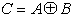
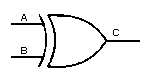
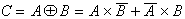

CONNETTIVI LOGICI FONDAMENTALI : Somma Esclusiva (EXOR)L' operazione di somma esclusiva corrisponde al seguente connettivo logico: La variabile
|
|
 |
 |
La funzione OR ESCLUSIVO può essere espressa in termini di AND OR ed INVERSIONE in base alla seguente relazione:

Nota:
Per semplicità si sono descritte funzioni (connettivi logici) di due
variabili, ovviamente le funzioni possono essere di più variabili, ad
es., un AND a tre ingressi corrisponde al seguente connettivo logico:
la variabile di uscita è vera se e solo se tutte e tre le variabili di
ingresso sono vere.
Le variabili di ingresso vengono indicate anche come: argomenti
della funzione o variabili indipendenti , la
funzione NOT è l'unica, tra quelle descritte, che può evere un
solo argomento, tutte le altre funzioni descritte hanno almeno
due argomenti.